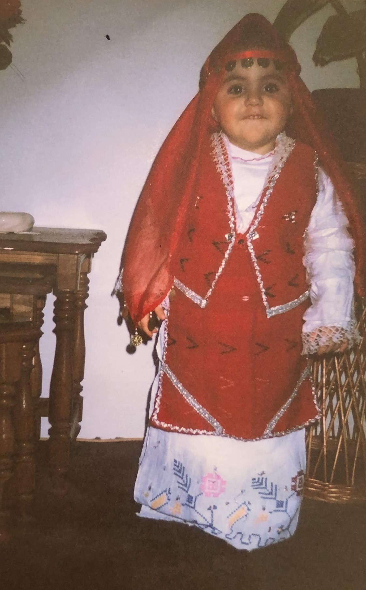

Personal Journey
Explore my journey of dance!
-
The beginning
Growing up in Kosovo, I had the opportunity to participate in yearly school performances for November 28th, Albania's Independence Day.
After Kosovo gained its independence on February 17, 2008
-
Performances
We celebrated that occasion with shows as well. These performances featured traditional dances, music, and poems.
As a four-year-old, I was only entrusted with small poems, reciting them in front of parents, students, and teachers.
-
The move
When I moved to Belgium at the age of nine, I joined my cousin at the Albanian school she attended.
Every Saturday, we went together for language and dance lessons.
Having just arrived from Kosovo, my Albanian was strong, which meant I was often given the hardest poems or expected to know all the songs. -
My strugels
However, I struggled with being the new kid and fitting in, even though I had my cousin by my side.
The biggest challenge was the language barrier. While we were there to learn Albanian, many of the kids spoke French, and I was learning Dutch at school.
Despite these difficulties, I always looked forward to dance practice each week. -
Getting tired
Over the years, I memorized countless poems (which I eventually grew tired of) and learned songs from our music teacher.
But dance was what I loved most. Getting dressed in traditional costumes and performing new dances brought me so much joy.
One of my most embarrassing moments was forgetting a poem during a school show at the age of 13 because I hadn’t memorized it properly. -
Growing up
By the age of 15, we grew tired of the same language lessons and started attending dance classes only, three times a week.
The intensity increased, and we began performing outside of school, like at a retirement home.
I was excited to finally perform in front of others besides our parents. -
Leaving dance
As more people joined our group, I struggled with anxiety and felt out of place, except with my cousin.
Despite feeling alone at times, I continued because of my love for dance.
After a brief break, I decided to return, and I haven’t stopped since. -
Me now
Today, I’m one of the "older" dancers with the experience of many shows, including weddings.
Dance has been a significant part of my life, helping me through moments of sadness, anxiety, and growth.
I've become a confident dancer who cherishes every performance, embracing the joy it brings to both me and the audience.